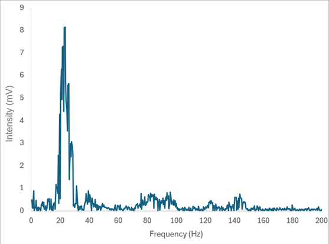

2026 · RESEARCH · INSTRUMENTATION · MATLAB
Lock-In Amplifier Data Acquisition
Experimental data acquisition project using an SRS lock-in amplifier, LabVIEW, MATLAB, and laboratory instrumentation to capture and analyze weak measured signals.

Overview
This project involved developing methods for acquiring measurements from a scientific lock-in amplifier and analyzing the resulting data. We first had to observe the behavior of the wave generated from a function generator then construct the wave's fast fourier transform graph using MATLAB code. After observing the signal, we were then made to use a Lock-in amplifier to cut out any noise, create a DC signal and a FFT graph on the SR860.
Data Acquisition
LabVIEW was used to communicate with the instrumentation and capture measurement data.
MATLAB was then used to process and analyze the exported measurements.
Signal Analysis
The project included investigation of measured amplitude and frequency-domain behavior and comparison with measurements obtained from an oscilloscope.
